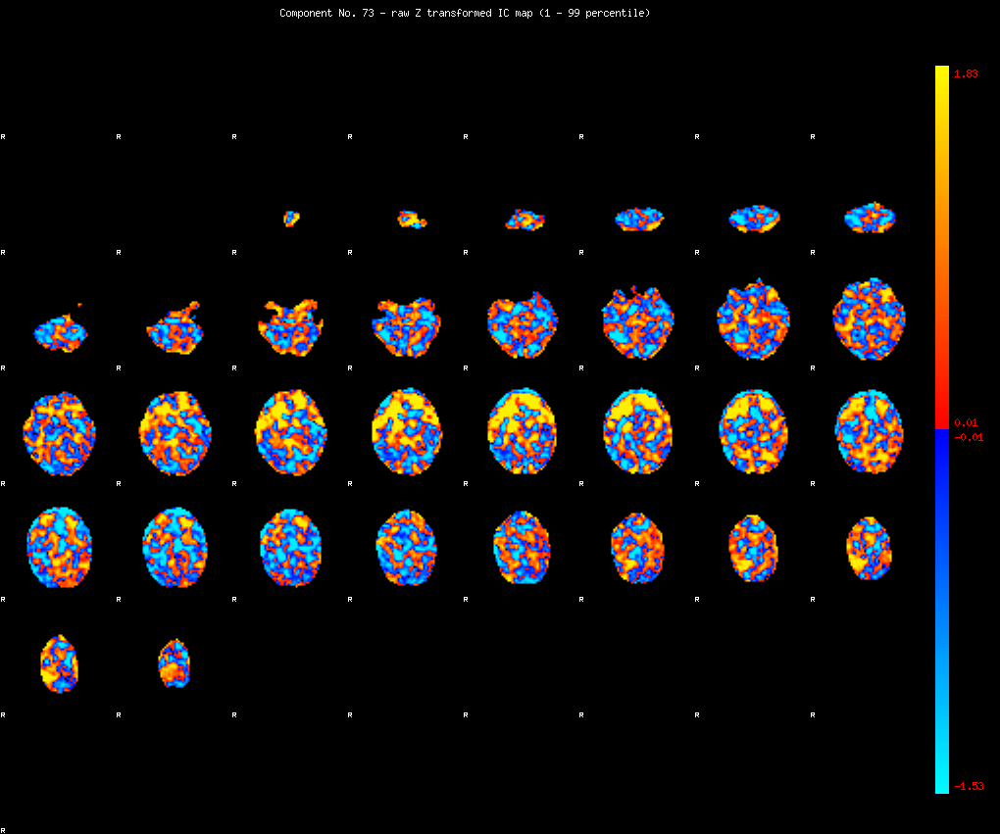
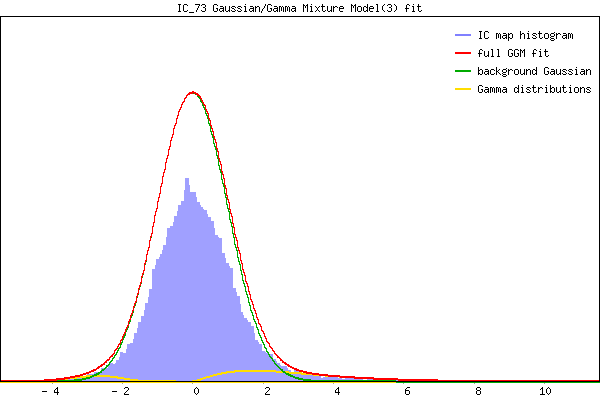

IC_73 Mixture Model fit
Means : 0.000000 2.920186 -2.853348
Vars : 1.000000 3.514661 0.537875
Prop. : 0.933615 0.053436 0.012949
This page produced automatically by MELODIC Version 3.13 - a part of FSL - FMRIB Software Library.